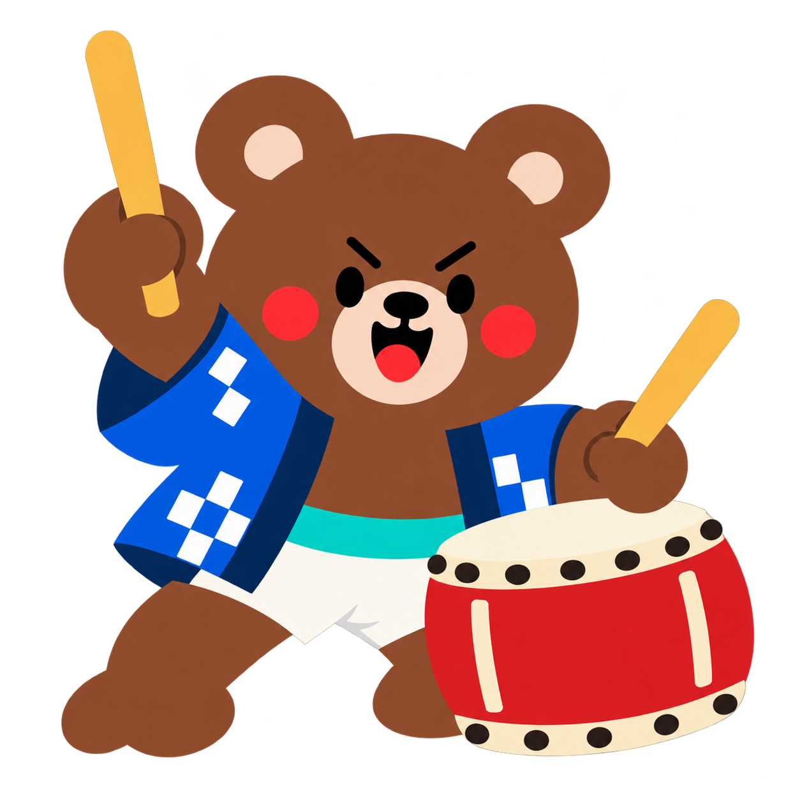
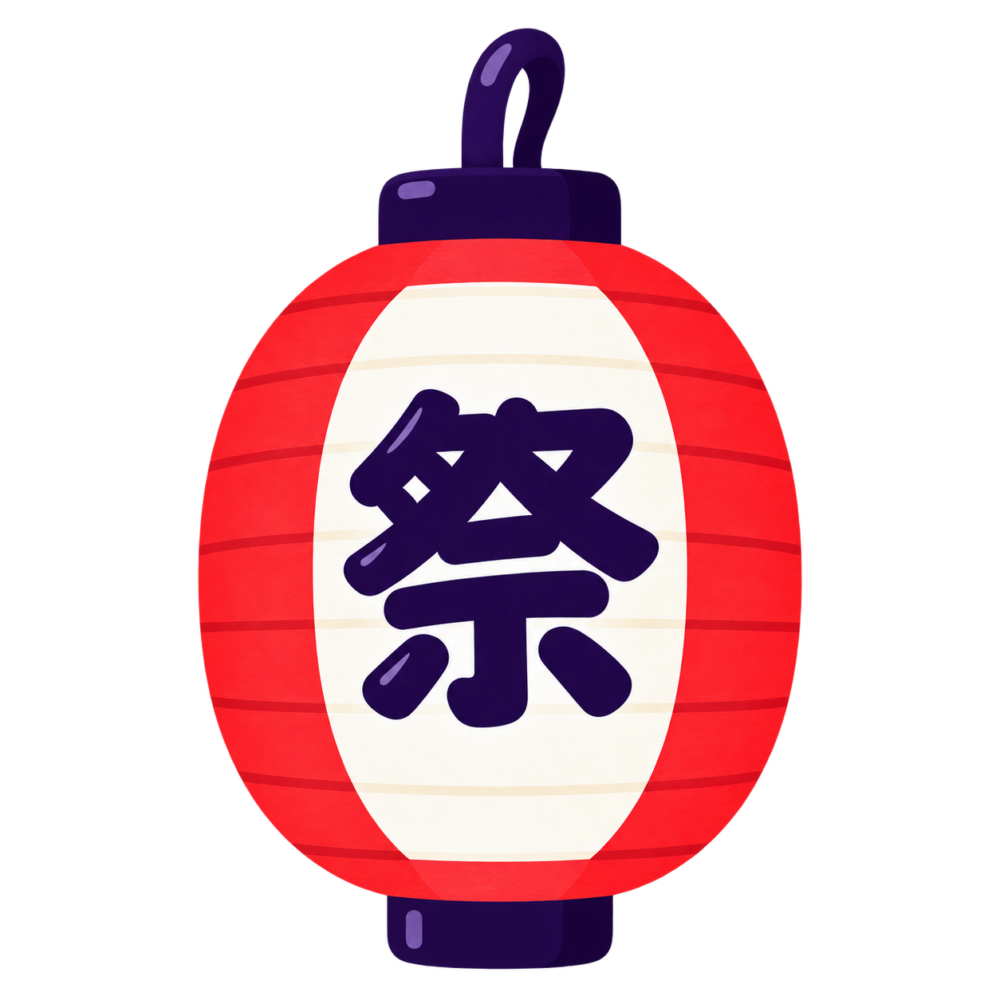
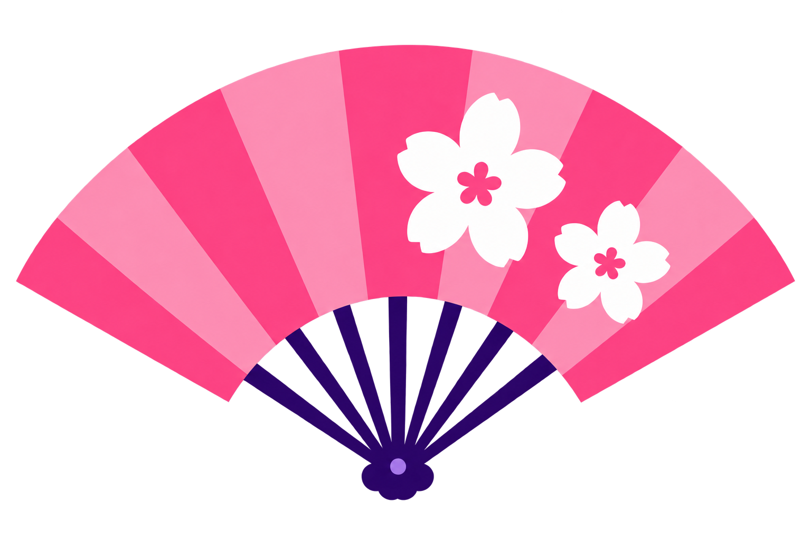

Koko + held uchiwa · 1254 × 1254

Bear + taiko and sticks · 1254 × 1254


Festival lantern · 1254 × 1254


Sakura folding fan · 1536 × 1024
Two character cutouts based on the supplied artwork, plus two standalone festival props. These are review candidates, not a finished collage. Approve the visual direction before expanding the set or assembling it in Figma.



Character-held props remain part of each character PNG in this review batch. Independent prop-only assets can be supplied for assembly. The remaining four characters and other motifs are not included yet. The final Japanese tagline will remain editable Figma text; the official logo will be placed unchanged. No Figma changes have been made.